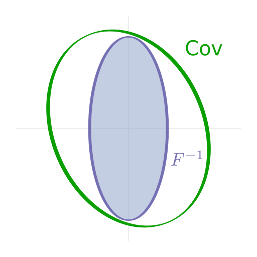
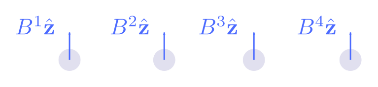
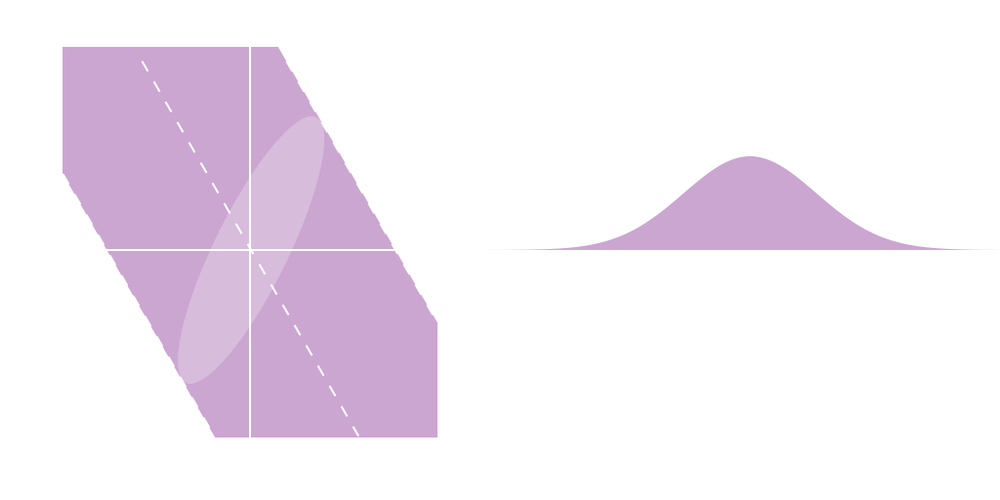

One from many
Scalar estimation in multiparameter contexts
Jonathan A. Gross, Carlton M. Caves
Center for Quantum Information and Control, University of New Mexico
Institut Quantique, Université de Sherbrooke


Models have free parameters

Estimates are always noisy

Fisher information reigns

Fisher information reigns

How about a single number?

Optimal and secure measurement protocols for quantum sensor networks, Zachary Eldredge, Michael Foss-Feig, JAG, S. L. Rolston, and Alexey V. Gorshkov, Phys. Rev. A 97, 042337 (2018)
How about a single number?
Identify and calculate , right?
Optimal and secure measurement protocols for quantum sensor networks, Zachary Eldredge, Michael Foss-Feig, JAG, S. L. Rolston, and Alexey V. Gorshkov, Phys. Rev. A 97, 042337 (2018)
WRONG!
You will calculate unattainable sensitivity goals.
You will construct estimators with unnecessary errors.
Â
Parameters define tangent vectors

Functions define differential forms

Parameters define conditioning

bounds conditional variance
Functions define marginalizing

bounds marginal variance
Conditional isn’t marginal

Quantum models define many distributions
Optimize over choices

Optimize over choices

Optimize over choices

We use norm to marginalize

Summary
Estimating a scalar function of many parameters is not a single-parameter problem.
Relationship of differential form to norm gives best sensitivity and optimal measurement (holds for arbitrary processes).
For more information on upcoming manuscript, see unm.edu/~jagross/blog